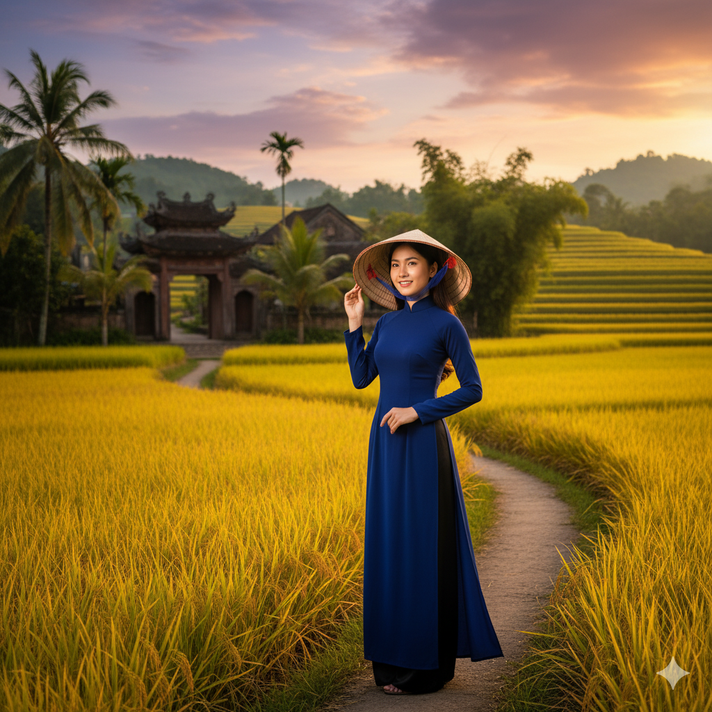
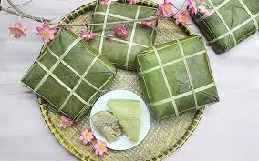
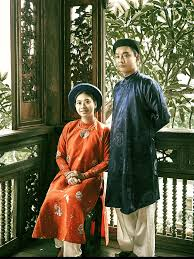
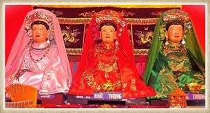
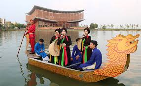

Chào Bạn Đến Với Văn Hóa Dân Tộc Kinh
Dân tộc Kinh (hay người Việt) là dân tộc chiếm đa số tại Việt Nam, với một nền văn hóa và lịch sử lâu đời, gắn liền với nền văn minh lúa nước tại các đồng bằng châu thổ.
🏛️ Trụ Cột Đạo Đức
Nền tảng đạo đức của người Kinh được xây dựng trên sự gắn kết gia đình (Nho giáo) và cộng đồng làng xã.
1. Đạo Hiếu (Thờ Cúng Tổ Tiên)
Chữ "Hiếu" là trung tâm. Việc thờ cúng tổ tiên, ông bà, cha mẹ (khi đã mất) là biểu hiện cao nhất của đạo Hiếu, là sợi dây kết nối các thế hệ trong gia đình.
2. Tôn Sư Trọng Đạo
Vị thế người thầy (Tôn sư) trong xã hội Kinh truyền thống rất cao, chỉ sau Vua. Tri thức và đạo lý luôn được đề cao.
3. Tình Làng Nghĩa Xóm (Văn hóa Làng Xã)
Người Kinh sống quần tụ theo Làng. "Lệ làng" (Hương ước) và tinh thần "Tối lửa tắt đèn có nhau" là một nét đẹp đạo đức cộng đồng đặc trưng.
🎨 Đặc Sắc Văn Hóa (Chỉ riêng Kinh)
1. Ẩm Thực Lúa Nước
Ẩm thực Kinh đặc trưng bởi sự tinh tế trong việc phối vị và cân bằng Âm - Dương.
-
Nước Mắm: "Linh hồn" của bữa ăn người Kinh. Việc sử dụng nước mắm làm gia vị cốt lõi trong hầu hết các món ăn là nét đặc trưng.
-

Bánh Chưng: Gắn liền với sự tích Lang Liêu, là biểu tượng cho nền văn minh lúa nước (gạo nếp) và triết lý Đất (vuông) của người Kinh.
2. Trang Phục Đặc Trưng
-

Áo Dài (từ Áo Ngũ Thân): Áo Dài hiện đại là biểu tượng quốc gia, nhưng nguồn gốc của nó (từ Áo tứ thân, ngũ thân) là trang phục truyền thống của người Kinh.
-
Áo Bà Ba & Khăn Rằn: Hình ảnh đặc trưng, gắn liền với cuộc sống khai hoang và sông nước của người Kinh ở Nam Bộ.
3. Nghệ Thuật Dân Gian & Tín Ngưỡng
-
Múa Rối Nước: Loại hình nghệ thuật sân khấu độc nhất vô nhị, sinh ra từ các ao hồ ở đồng bằng sông Hồng. 100% là của người Kinh.
-

Tín ngưỡng Thờ Mẫu (Đạo Mẫu): Một tín ngưỡng dân gian bản địa, tôn thờ các Mẫu thần (Mẫu Trời, Mẫu Đất, Mẫu Nước) rất đặc trưng của người Kinh.
-

Hát Quan Họ: Hình thức hát giao duyên đặc trưng của người Kinh ở vùng Kinh Bắc (Bắc Ninh, Bắc Giang).